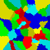

Import and export functionality¶
Results obtained during simulation can be exported to either text file or image. Exported files can be imported and simulation may be continued.
Export to text¶
Text files are formatted in such way:
- first line contains field dimensions (width, height)
- following lines contain (x, y) coordinates and ids assigned to them
Text file being result of exporting field after simulation.
200 200
0 0 42
0 1 42
0 2 42
0 3 42
0 4 42
0 5 42
0 6 42
0 7 42
0 8 42
0 9 42
0 10 42
0 11 42
0 12 42
0 13 42
0 14 42
0 15 42
0 16 42
0 17 42
0 18 42
(...)
Images¶
Image export is pretty straightforward - what you see on the screen gets imported to .png file.
Saved images can also be imported.
Image file after exporting from application is presented on Image 2.
{kind=link}
Image 2 image of 100x100 field that will be saved on hard drive
{kind=link}
Code¶
-
files.export_image(grain_field: ca.grain_field.GrainField, path_file='field_img.png')[source]¶ Export grain field as a png image
Parameters: - grain_field – GrainField object to be exported
- path_file – path to save the image